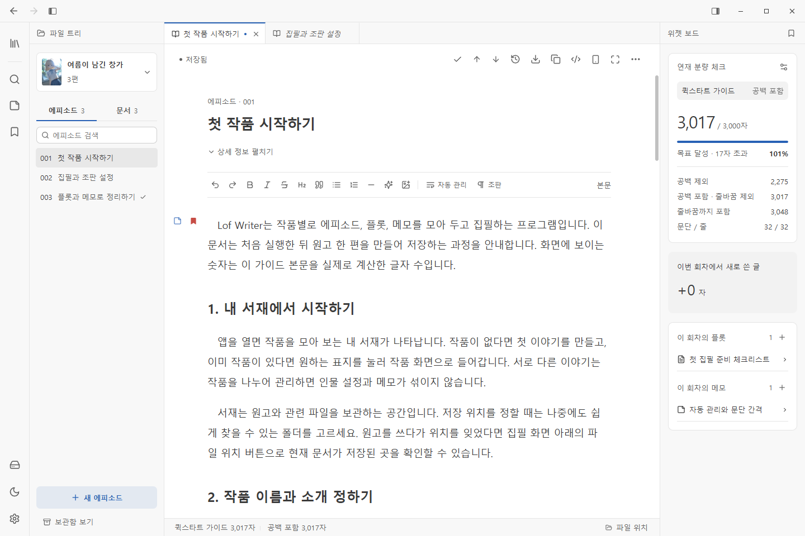

LOCAL FIRST WRITING TOOL
원고는 내 PC에,
이야기는 다음 장으로.
회차·플롯·메모를 한곳에서 관리하는 Windows용 소설 집필 프로그램. 떠오른 생각을 붙잡고, 이야기의 흐름을 정리하고, 나에게 맞는 화면에서 써 내려가세요.
무료 · 오픈소스 · 가입 없이 시작


예시 이미지와 텍스트는 기능 이해를 돕기 위해 생성형 AI를 사용해 제작했습니다.
파일로 남는 원고
원고를 내 PC의 Markdown 파일로 저장합니다. 다른 편집기에서도 열고 수정할 수 있습니다.
집필과 작품 관리
회차·플롯·메모, 다중 탭과 분할 화면, 분량 확인과 로컬 수정 이력을 지원합니다.
외부 저장소 동기화
로컬·공유 폴더, FTP/FTPS, WebDAV를 연결할 수 있습니다. AI 도구는 MCP로 원고를 조회하고 편집합니다.